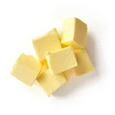
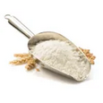
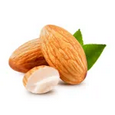

Informations :
- Temps : 25min
- Cuisson : 15min
- Difficulté : Très facile
- Prix : Moyen
Ingrédients :
8 personnes
- 160g beurre
 300g de sucre en poudre
300g de sucre en poudre- 100g de farine
 8 blancs d'oeuf
8 blancs d'oeuf- 100g d'amande en poudre
- 500g de framboises
 4 citrons vert
4 citrons vert
Préparation :
- Mélanger au fouet le sucre + les blancs d'oeufs. Ajouter la farine, la poudre d'amandes et le beurre ramolli ou fondu.
- Prélever le zeste du citron. Le couper finement et ébouillanter 5 minutes. Ajouter les zestes blanchis à la préparation.
- Préchauffer le four à 200°C (thermostat 6-7).
- Verser la pâte dans les moules. Afin de faciliter le démoulage, l'idéal est d'utiliser des moules souples. Ajouter les framboises.
- Faire 15 à 20 min au four jusqu'à ce qu'ils soient légèrement dorés sur les bords.